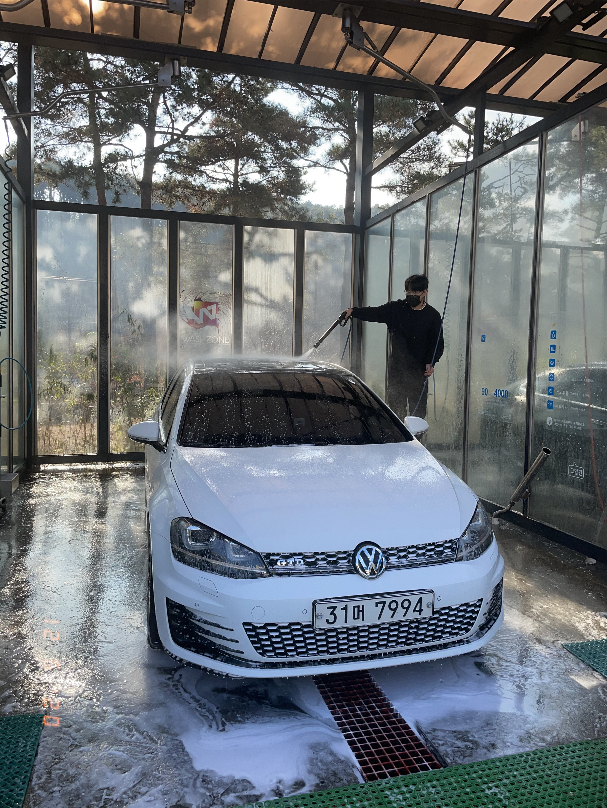
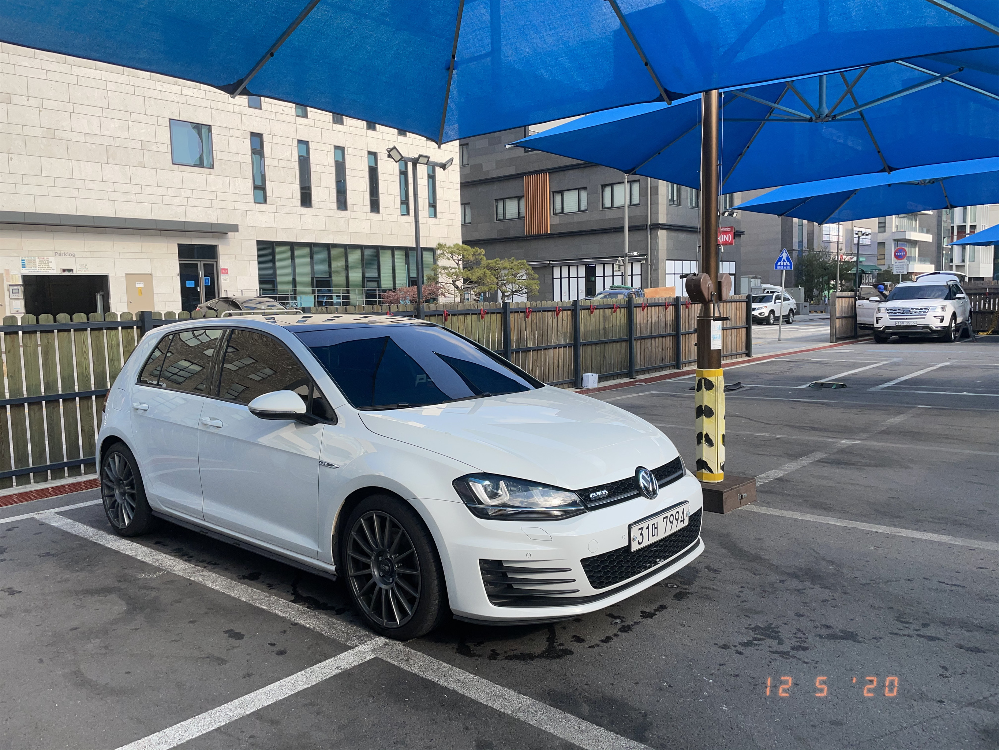

오늘은 세차를 하러 갑니다.
자주 가시는 분들도 계시겠지만 한달에 한번도 잘 안하는 요즘입니다. 첫차인 6세대 GTD 탈때는 한달에 2번은 꼭 세차했던 것 같은데 이제는 차가 더러운게 눈으로 보여야 세차를 하네요. 😅
세차는 6세대 때부터 현금 사용이 가능한 동네 작은 세차장을 이용했었는데 예전에 세곡동 놀러갔다가 우연히 발견한 세차장에서 충동적으로 카드 충전을 하는 바람에 계속 가고있습니다. 세차장도 깔끔하고 무엇보다 동네가 조용해서 좋긴 한데 가깝지 않아서 자주는 안가지다
워시존 강남점 서울 강남구 헌릉로569길 39-5


기록 끝.